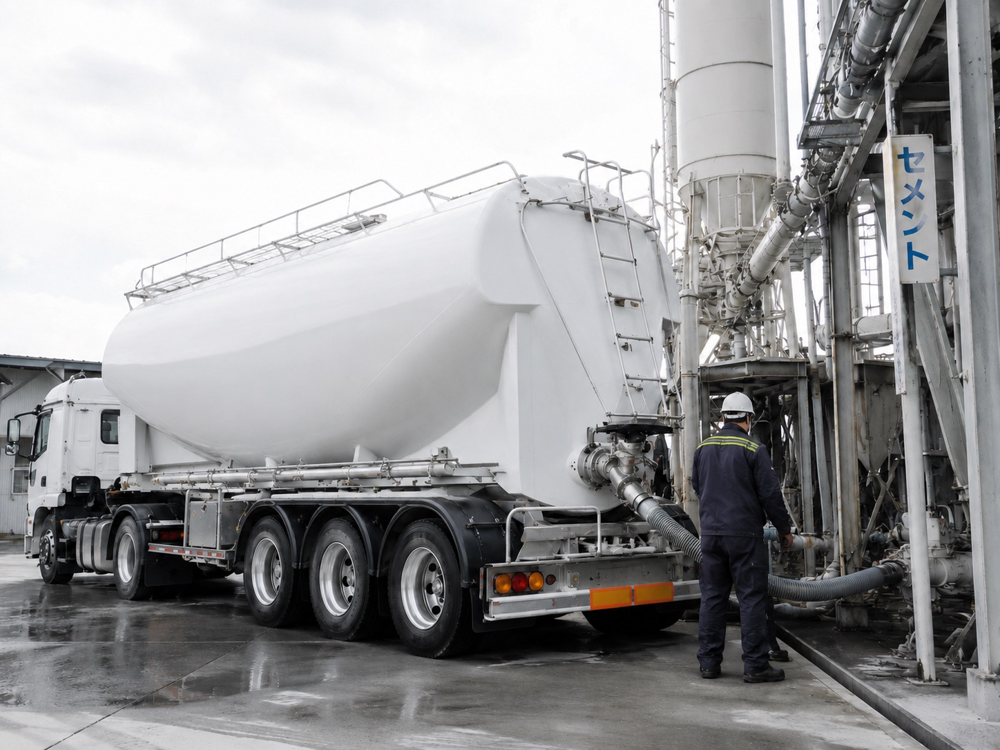

SERVICE
事業案内
備後商会では、岡山県岡山市東区神崎町に拠点を置く運送会社として、専用車両を用いたセメント輸送・ベントナイト輸送・生コンクリート輸送を行っています。安全確認を徹底し、現場へ確実にお届けすることを大切にしています。

CEMENT
セメント輸送
粉末状の袋詰めされていないセメントなどを、専用車両であるジェットパック車を用いて、安全確実に輸送・圧送します。現場やプラントの状況に合わせ、丁寧で確実な対応を心がけています。

BENTONITE
ベントナイト輸送
粉末状のベントナイトなどを専用車両で輸送します。岡山市をはじめとした地域の現場から全国各地への運行にも対応しています。全国各地への輸送にも対応し、安全確認を徹底した運行で、確実に目的地までお届けします。
CONCRETE
生コンクリート輸送
高品質な生コンクリート、レディーミクストコンクリートを、各プラントから現場へ安全確実に輸送します。時間管理と安全運行を大切にし、現場の進行を支えます。
CONTACT